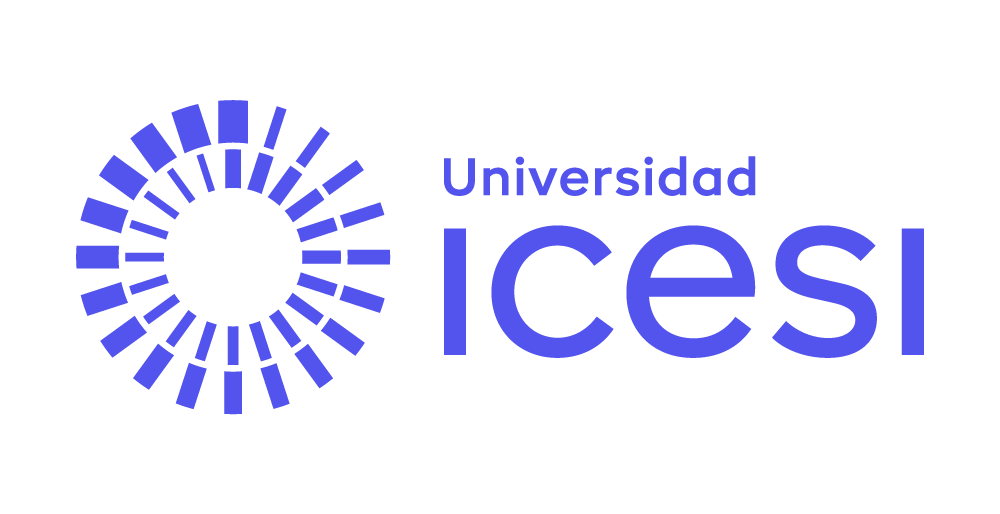

Investigación: IA generativa en la enseñanza de R para economía aplicada

Documento de referencia para el docente — Curso Nivelatorio de R (CIENFI · Universidad Icesi). Informe de búsqueda web profunda (julio de 2026) sobre cómo integrar IA generativa en el curso. De aquí salen la Guía de uso de IA y las actividades con IA de cada unidad.
Resumen ejecutivo
La evidencia de 2023–2026 converge en cuatro puntos: (1) los LLMs resuelven la mayoría de las tareas típicas de un curso introductorio de programación/econometría, por lo que prohibirlos es inviable y no preparar a los estudiantes para usarlos es negligente; (2) el uso sin andamiaje pedagógico daña el aprendizaje (efecto "muleta", "metacognitive laziness", "cognitive debt"), pero el uso con barandas (tutores socráticos, intento previo obligatorio, verificación exigida) puede igualar o superar métodos activos tradicionales; (3) el ecosistema R ya tiene herramientas maduras (ellmer, gander, chattr, statlingua, Copilot en RStudio, Posit Assistant) que permiten diseñar actividades dentro del IDE, no solo en un chat externo; (4) el diseño de evaluación dominante es de "dos carriles": tareas abiertas con IA documentada + instancias seguras sin IA que certifican la competencia individual.
1. Cursos universitarios reales que ya integran IA generativa
1.1. CS1-LLM (UC San Diego) — el rediseño más citado
Curso introductorio de programación (~550 estudiantes) rediseñado desde la primera clase alrededor de GitHub Copilot y ChatGPT: el foco pasa de escribir sintaxis a descomponer problemas, especificar funciones, leer código y testear lo que la IA genera (Vadaparty, Zingaro et al., ITiCSE 2024).
- https://arxiv.org/abs/2406.15379 · https://dl.acm.org/doi/abs/10.1145/3649217.3653584 · seguimiento: https://arxiv.org/abs/2510.18806
- Aplicación: reordenar objetivos: menos "memorizar sintaxis de dplyr", más "especificar la transformación, predecir el resultado y verificar el código contra casos conocidos" (tríada especificar → generar → verificar).
1.2. Harvard CS50 y el "pato" CS50.ai — IA institucional con barandas
Tutor LLM propio con guardrails: guía sin dar la solución, limita la tasa de preguntas, y la política declara "no razonable" el chat genérico pero "razonable" la IA del curso ("Teaching CS50 with AI", SIGCSE 2024).
- https://cs50.harvard.edu/x/2025/notes/ai/ · https://cs.harvard.edu/malan/publications/V1fp0567-liu.pdf
- Aplicación: replicable sin infraestructura con un system prompt estándar del curso (proyecto de Claude/GPT del curso con comportamiento socrático).
1.3. ECON 368 "Big Data and Economics" (Bates College) — economía, en R, con IA fomentada
Syllabus: "You are actively encouraged to use generative AI assistants… to improve your code", con la advertencia "Your brain is still the most powerful tool you have".
- https://github.com/big-data-and-economics/big-data-class-materials
- Aplicación: el ejemplo más cercano a este curso (economía + R); su lenguaje de política ("fomentado, pero después de intentar") es directamente adaptable.
1.4. QTM 350 (Emory, Danilo Freire)
Clases dedicadas a "AI-Assisted Programming" dentro de un curso de cómputo reproducible.
- https://danilofreire.github.io/datasci350/
- Aplicación: justifica dedicar tiempo de clase formal a la IA como contenido, no solo como permiso.
1.5. RCT "Teaching Econometrics with AI" (U. Adolfo Ibáñez, Chile)
Ensayo aleatorizado registrado (AEA RCT Registry, 2025): GPT personalizado de econometría con ~385 estudiantes; compara acceso estándar vs. guía "orientada al aprendizaje".
- https://www.socialscienceregistry.org/trials/16770
- Aplicación: evidencia regional; el diseño "tutor entrenado con materiales del curso" es replicable; seguir la publicación de resultados.
1.6. Recursos de economistas
- Fetzer (Warwick), "Machine Learning and AI in Economics": https://www.trfetzer.com/machine-learning-and-ai-in-economics/
- Hub "AI for Economists" (incluye curso Coursera de Korinek): https://policy.fi/ai-econ/
- Claude for Education (Learning Mode socrático): https://www.anthropic.com/news/introducing-claude-for-education
1.7. Políticas de syllabus (plantillas)
- Duke CTL: https://ctl.duke.edu/ai-and-teaching-at-duke-2/artificial-intelligence-policies-in-syllabi-guidelines-and-considerations/
- UT Austin (declaraciones listas): https://fisd.utexas.edu/chatgpt-and-generative-ai-tools-sample-syllabus-policy-statements
2. Papers y guías académicas
Economía
- Cowen y Tabarrok (2023), "How to Learn and Teach Economics with LLMs": https://papers.ssrn.com/sol3/papers.cfm?abstract_id=4391863 — base para la sesión "cómo hablarle a un LLM sobre economía y datos".
- Korinek, JEL (2023), "Generative AI for Economic Research": https://www.aeaweb.org/articles?id=10.1257%2Fjel.20231736 — taxonomía de casos de uso clasificados por confiabilidad; usable como mapa de qué delegar por unidad.
- Geerling et al. (2023), ChatGPT en percentil 91-99 del TUCE: https://journals.sagepub.com/doi/10.1177/05694345231169654 — argumento empírico para el esquema de evaluación de dos carriles.
- RES/CTaLE/Stone Centre UCL (2025), "Rethinking Economics Assessments for a GenAI World": https://res.org.uk/rethinking-economics-assessments-for-a-genai-world/
- Economics Network, tema AI (incluye el caso "critique the AI" de Beck y Brodersen): https://economicsnetwork.ac.uk/themes/ai
Educación en estadística y ciencia de datos
- Ellis y Slade, JSDSE (2023): https://www.tandfonline.com/doi/full/10.1080/26939169.2023.2223609
- DeLuca y Brown, JSDSE (2025) — los LLMs modulan mal la confianza y usan lenguaje causal indebido al interpretar: https://www.tandfonline.com/doi/full/10.1080/26939169.2025.2497547 — fundamenta la rúbrica de interpretación de regresiones.
- Hageman y Peeters (2025) — regla operativa "sin IA en el núcleo del objetivo de aprendizaje, con IA en lo auxiliar"; demostraciones en vivo de errores confiados de la IA: https://arxiv.org/html/2510.00793
- Bray (2024), "Teaching Data Analytics with Generative AI" — el chatlog como entregable: https://arxiv.org/abs/2411.07244
Computing education
- Prather et al. (ITiCSE WG 2023), "The Robots Are Here": https://arxiv.org/abs/2310.00658
- Denny et al., CACM (2024): https://dl.acm.org/doi/10.1145/3624720
- Denny et al. (SIGCSE 2024), "Prompt Problems": https://dl.acm.org/doi/10.1145/3626252.3630909 — ejercicio: escribir UN prompt que genere código que pase tests.
- Mollick y Mollick (2023), "Assigning AI: Seven Approaches" (tutor, coach, mentor, teammate, tool, simulator, AI-student): https://arxiv.org/abs/2306.10052
3. Herramientas de IA en el ecosistema R (estado 2025–2026)
| Herramienta | Qué hace | Estado | URL |
|---|---|---|---|
| ellmer (tidyverse) | Chat con 18+ proveedores desde R; tool calling; extracción estructurada | CRAN, maduro | https://ellmer.tidyverse.org/ |
| chattr | Gadget de chat en RStudio; inserta código en el script | CRAN | https://mlverse.github.io/chattr/ |
| gander | "Copilot con contexto": lee el environment (columnas, tipos) y escribe código en el cursor | CRAN | https://simonpcouch.github.io/gander/ |
| gptstudio | Addins de RStudio: chat, comentar código | CRAN | https://github.com/MichelNivard/gptstudio |
| statlingua | explain(modelo): traduce salidas de lm/GLM a lenguaje natural por audiencia |
CRAN | https://cran.r-project.org/package=statlingua |
| mall | LLMs fila a fila sobre data frames (clasificar, extraer) | CRAN | https://mlverse.github.io/mall/ |
| GitHub Copilot en RStudio | Autocompletado nativo; gratis para estudiantes y docentes (GitHub Education) | Estable | https://docs.posit.co/ide/user/ide/guide/tools/copilot.html |
| Posit Assistant (Positron/RStudio) | Chat + agente con contexto de ciencia de datos; suscripción o BYO-key | Producción | https://positron.posit.co/assistant.html |
| Databot | Agente de EDA "code-forward" (el análisis no está completo hasta revisar el código) | Experimental | https://posit.co/blog/introducing-databot |
| Air | No es IA: formateador rápido de código R (útil para formatear código generado) | Estable | https://posit-dev.github.io/air/ |
- Taller oficial posit::conf(2025) "Programming with LLMs": https://posit-conf-2025.github.io/llm/
- Libro abierto "LLM tools for R": https://luisdva.github.io/llmsr-book/
Toolchain sugerido para el curso: RStudio + Copilot (gratis educación) + un chat institucional (Claude for Education / Gemini free tier) + statlingua/ellmer para actividades puntuales; Ollama para demostraciones locales sin costo.
4. Diseños de evaluación
- AI Assessment Scale (AIAS) — 5 niveles por tarea: No AI → AI Planning → AI Collaboration → Full AI → AI Exploration. Etiquetar cada entregable del curso con su nivel: https://aiassessmentscale.com/
- "Dos carriles" (U. de Sídney) — Carril 1: evaluación segura (presencial, sin IA) que certifica competencia individual; Carril 2: evaluación abierta con IA documentada: https://educational-innovation.sydney.edu.au/teaching@sydney/aligning-our-assessments-to-the-age-of-generative-ai/
- Apéndice de uso de IA obligatorio en entregables abiertos: herramientas, prompts clave, qué se verificó y cómo (Wageningen; RES 2025).
5. AI literacy: qué deben saber validar los estudiantes
- Paquetes/funciones inexistentes ("package hallucination"): ~19,7% de paquetes recomendados por LLMs en 576.000 muestras de código eran alucinados (USENIX Security 2025); además es vector de ataque ("slopsquatting"). Regla: todo paquete sugerido por IA se verifica en CRAN antes de instalar. https://www.helpnetsecurity.com/2025/04/14/package-hallucination-slopsquatting-malicious-code/
- Código que corre pero está mal: joins que duplican filas,
na.rm = TRUEque oculta faltantes, filtros que cambian la muestra, dummies leídas como numéricas — nada arroja error; se valida connrow(),summary(),count(), comparaciones de identidad. - Interpretación estadística incorrecta o sobreconfiada: lenguaje causal injustificado, confundir significancia con magnitud, ignorar el log en la variable dependiente (DeLuca y Brown 2025).
Marcos de referencia: Long y Magerko (CHI 2020) https://dl.acm.org/doi/10.1145/3313831.3376727 · UNESCO AI competency framework (2024) https://www.unesco.org/en/articles/ai-competency-framework-students · Anthropic Education Report https://www.anthropic.com/news/anthropic-education-report-how-university-students-use-claude
6. Riesgos documentados y mitigación
Evidencia de daño:
- Bastani et al. (2024, RCT ~1.000 estudiantes): acceso a GPT mejoró la práctica (+48%) pero al retirarlo rindieron 17% peor que el control (efecto "muleta"); el "GPT Tutor" con barandas eliminó casi todo el daño: https://papers.ssrn.com/sol3/papers.cfm?abstract_id=4895486
- Fan et al., BJET (2025): "metacognitive laziness" — mejora la tarea inmediata, no la transferencia: https://bera-journals.onlinelibrary.wiley.com/doi/abs/10.1111/bjet.13544
- Prather et al. (ICER 2024), "The Widening Gap": los novatos que ya luchaban desarrollan falsa sensación de competencia con IA; la brecha se amplía — la población de un nivelatorio es exactamente la de riesgo: https://dl.acm.org/doi/10.1145/3632620.3671116
- Lee et al. (CHI 2025): más confianza en la IA ↔︎ menos pensamiento crítico en profesionales: https://dl.acm.org/doi/full/10.1145/3706598.3713778
- Kosmyna et al. (MIT, 2025, preprint — citar con cautela): "cognitive debt": https://www.brainonllm.com/
Evidencia de beneficio con diseño correcto:
- Kestin et al. (Scientific Reports, 2025, RCT Harvard): tutor IA con andamiaje experto duplicó las ganancias de aprendizaje frente a clase activa: https://hechingerreport.org/proof-points-ai-tutor-harvard-physics/
Estrategias (síntesis accionable):
- "Primero el cerebro, luego la IA": intento documentado antes de consultar.
- Tutor del curso con barandas (system prompt socrático) en vez de chat crudo.
- Explicar el código generado: poder glosar línea a línea cualquier código entregado.
- Carril seguro sin IA (sustentación oral / quiz presencial).
- Documentación estandarizada del uso (apéndice de IA / chatlog).
- Enseñar los fallos en vivo: demo de la IA fallando con confianza (paquete inventado + interpretación causal indebida) calibra mejor que cualquier advertencia.
7. Actividades adaptadas en este curso
Del catálogo de 11 actividades identificadas en la literatura, el curso implementa cuatro (una por unidad), en los archivos actividad_ia_unidad-X.md:
| Unidad | Actividad | Base en la literatura |
|---|---|---|
| 1 | "Primero tú, luego la IA" — escalera de depuración de errores | Bastani et al.; política Bates; CS50 |
| 2 | "El código corre pero está mal" — bugs silenciosos en limpieza | Denny (CACM); Prather (ICER) |
| 3 | "Mejora esta figura" — iteración con registro de prompts | Korinek; Mollick (AI-tool) |
| 4 | "Crítica al econometrista artificial" — corregir la interpretación de la IA | Beck-Brodersen; DeLuca y Brown |
El proyecto final usa el esquema de dos carriles: desarrollo abierto (nivel AIAS "AI Collaboration") con apéndice de uso de IA + sustentación oral sin IA como carril seguro.